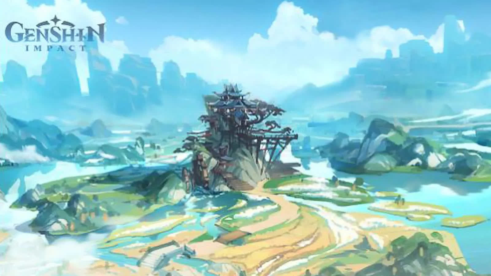

Мемы и приколы:
И.Н.М.Т. ролики
Genshin Impact ролики
Факты:
И.Н.М.Т
А вы знали, что Лампачка на самом деле не заразилась вирусом? В неё вселилась буква Н.
А вы знали, с какой начинкой Курасан? Многие думают что у него шоколадная начинка, но на самом деле сам Зак говорит в описании что начинка Курасана... Сгущёнка! Почти 60% люде не знают начинку Курасана. Вот это поворот...
Genshin Impact
А вы знали, что новый город (Сумеру) выйдет буквально чере месяц? Да, и это правда. Разработчики обещали, что 2022 года летом выйдет новая карта!
А вы знали, что очень важно чтобы в вашем отряде были персонажи, обладающие разными или всеми доступными элементами. В последнем случае вы сможете получить 15% сопротивление ко всем стихиям, что несомненно является огромным плюсом. А если решитесь взять в отряд парочку пиромантов, сможете получить 25% повышение урона для всех героев в отряде! Экспериментируйте с построением своего отряда и получайте доступ к разнообразным бонусам.